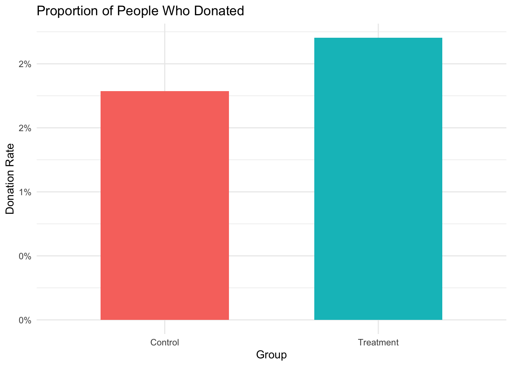
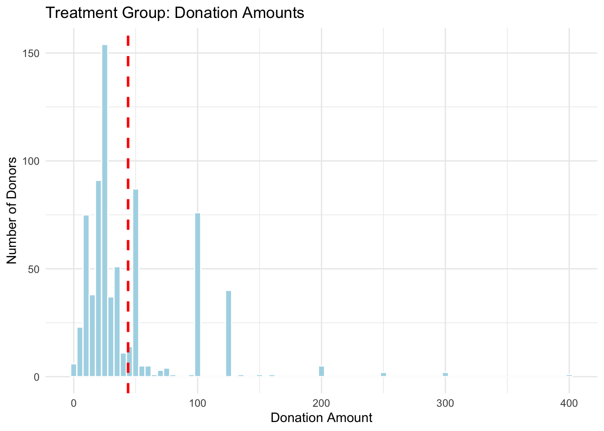
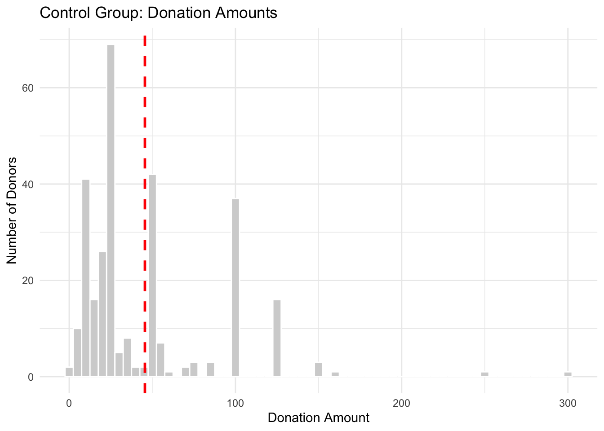
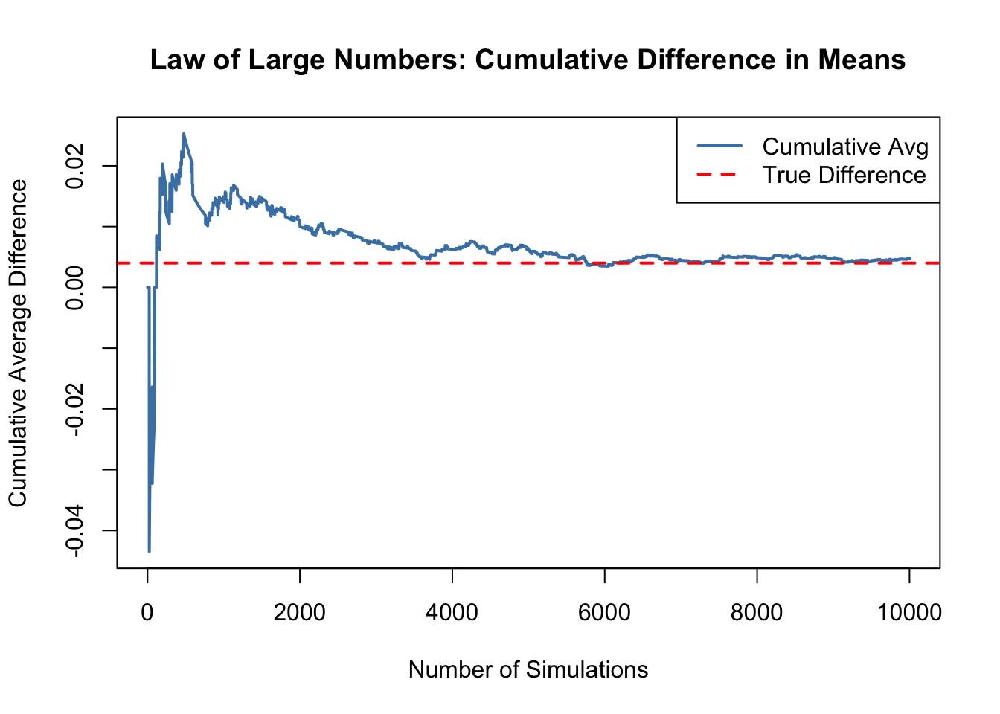
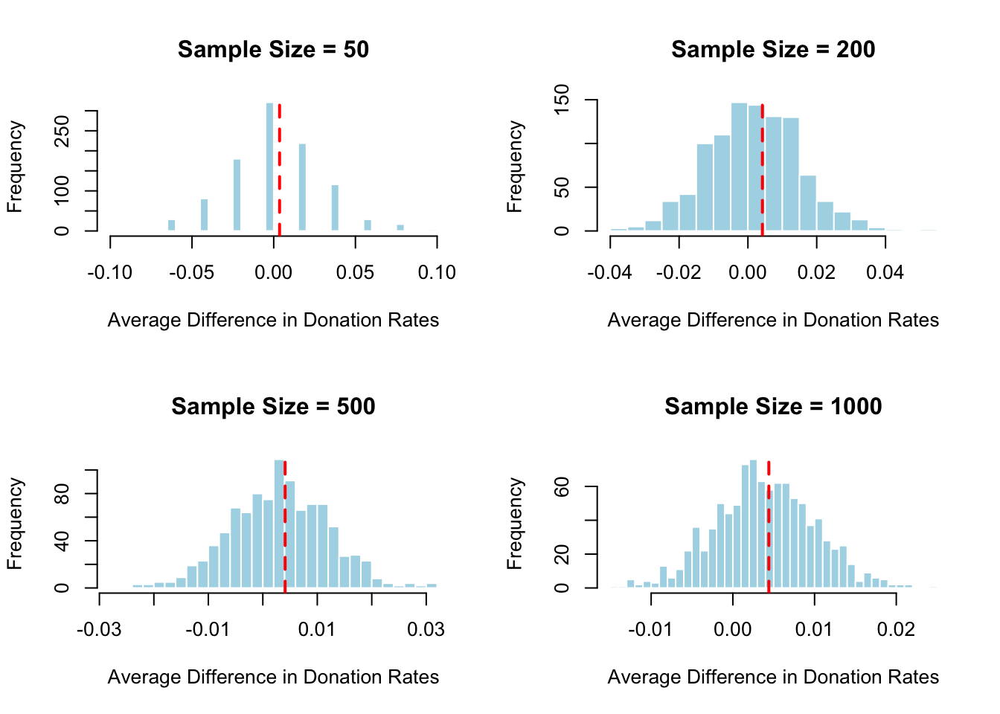

Dean Karlan at Yale and John List at the University of Chicago conducted a field experiment to test the effectiveness of different fundraising letters. They sent out 50,000 fundraising letters to potential donors, randomly assigning each letter to one of three treatments: a standard letter, a matching grant letter, or a challenge grant letter. They published the results of this experiment in the American Economic Review in 2007. The article and supporting data are available from the AEA website and from Innovations for Poverty Action as part of Harvard’s Dataverse.
In the experiment, more than 50,000 prior donors to a politically progressive nonprofit organization were randomly assigned to receive one of several fundraising letters via direct mail. The control group received a standard appeal for donations. The treatment group received one of several versions of a letter announcing a matching grant: either a 1:1, 2:1, or 3:1 match, meaning the donor’s contribution would be matched by $1, $2, or $3 for every $1 given, respectively. The letters also varied in the maximum size of the matching grant, which was either $25,000, $50,000, $100,000, or left unspecified.The letters also gave people a hint about how much to give, based on how much they gave before.
This design allows for analysis of how different aspects of a fundraising message affect donor behavior, specifically: - whether people donate at all - how much they give - whether larger matching ratios lead to higher engagement
The randomized design ensures that the causal effect of the message content can be estimated.
This project seeks to replicate their results.
Data
Description
This dataset includes donation behavior and treatment assignments from a large field experiment on charitable giving. It contains a rich set of variables covering match offers, donation history, demographics, and political/geographic characteristics.
Dataset Table
library(haven)library(dplyr)
Attaching package: 'dplyr'
The following objects are masked from 'package:stats':
filter, lag
The following objects are masked from 'package:base':
intersect, setdiff, setequal, union
library(ggplot2)
Warning: package 'ggplot2' was built under R version 4.3.3
Suggested donation was highest previous contribution
askd2
Suggested donation was 1.25 x highest previous contribution
askd3
Suggested donation was 1.50 x highest previous contribution
ask1
Highest previous contribution (for suggestion)
ask2
1.25 x highest previous contribution (for suggestion)
ask3
1.50 x highest previous contribution (for suggestion)
amount
Dollars given
gave
Gave anything
amountchange
Change in amount given
hpa
Highest previous contribution
ltmedmra
Small prior donor: last gift was less than median $35
freq
Number of prior donations
years
Number of years since initial donation
year5
At least 5 years since initial donation
mrm2
Number of months since last donation
dormant
Already donated in 2005
female
Female
couple
Couple
state50one
State tag: 1 for one observation of each of 50 states; 0 otherwise
nonlit
Nonlitigation
cases
Court cases from state in 2004-5 in which organization was involved
statecnt
Percent of sample from state
stateresponse
Proportion of sample from the state who gave
stateresponset
Proportion of treated sample from the state who gave
stateresponsec
Proportion of control sample from the state who gave
stateresponsetminc
stateresponset - stateresponsec
perbush
State vote share for Bush
close25
State vote share for Bush between 47.5% and 52.5%
red0
Red state
blue0
Blue state
redcty
Red county
bluecty
Blue county
pwhite
Proportion white within zip code
pblack
Proportion black within zip code
page18_39
Proportion age 18-39 within zip code
ave_hh_sz
Average household size within zip code
median_hhincome
Median household income within zip code
powner
Proportion house owner within zip code
psch_atlstba
Proportion who finished college within zip code
pop_propurban
Proportion of population urban within zip code
Balance Test
As an ad hoc test of the randomization mechanism, I provide a series of tests that compare aspects of the treatment and control groups to assess whether they are statistically significantly different from one another.
Before analyzing the effects of the treatment, it’s important to confirm that the treatment and control groups were similar to begin with. To do this, I test whether key baseline characteristics differ between the groups. This ensures that any observed outcomes can be confidently attributed to the treatment itself.
lm_balance <-lm(mrm2 ~ treatment, data = data)summary(lm_balance)
Call:
lm(formula = mrm2 ~ treatment, data = data)
Residuals:
Min 1Q Median 3Q Max
-13.012 -9.012 -5.012 6.002 154.988
Coefficients:
Estimate Std. Error t value Pr(>|t|)
(Intercept) 12.99814 0.09353 138.979 <2e-16 ***
treatment 0.01369 0.11453 0.119 0.905
---
Signif. codes: 0 '***' 0.001 '**' 0.01 '*' 0.05 '.' 0.1 ' ' 1
Residual standard error: 12.08 on 50080 degrees of freedom
(1 observation deleted due to missingness)
Multiple R-squared: 2.851e-07, Adjusted R-squared: -1.968e-05
F-statistic: 0.01428 on 1 and 50080 DF, p-value: 0.9049
I compare the mrm2 between the treatment and control groups. Using both a manual t-test and a linear regression, I find no statistically significant difference. The t-statistic is 0.1195 and the regression p-value is 0.905. Both results show no statistically significant difference.
These findings match the results in Table 1 of the original paper, where the means for this variable are 13.012 for treatment group., and 12.998 for control group. Combined with similar standard deviations for both around 12.08, the small difference supports the idea that the groups are nearly identical on this pre-treatment characteristic.
Table 1 is important because it shows that any later differences in giving behavior are likely due to the treatment, not pre-existing differences in the people themselves. That’s the power of random assignment, and allows this experiment to make strong causal claims.
Call:
lm(formula = female ~ treatment, data = data)
Residuals:
Min 1Q Median 3Q Max
-0.2827 -0.2752 -0.2752 0.7173 0.7248
Coefficients:
Estimate Std. Error t value Pr(>|t|)
(Intercept) 0.282698 0.003504 80.688 <2e-16 ***
treatment -0.007547 0.004292 -1.758 0.0787 .
---
Signif. codes: 0 '***' 0.001 '**' 0.01 '*' 0.05 '.' 0.1 ' ' 1
Residual standard error: 0.4478 on 48970 degrees of freedom
(1111 observations deleted due to missingness)
Multiple R-squared: 6.313e-05, Adjusted R-squared: 4.271e-05
F-statistic: 3.092 on 1 and 48970 DF, p-value: 0.07869
Then I tested the female variable. The t-statistic is -1.75 and the p-value from the regression is 0.079. This means we fail to reject the null hypothesis of no difference. In Table 1 of the paper, the proportion of females is 0.275 in treatment and 0.283 in control, so it is nearly identical to test results.
Call:
lm(formula = freq ~ treatment, data = data)
Residuals:
Min 1Q Median 3Q Max
-8.035 -6.047 -4.035 1.953 209.965
Coefficients:
Estimate Std. Error t value Pr(>|t|)
(Intercept) 8.04734 0.08821 91.231 <2e-16 ***
treatment -0.01198 0.10802 -0.111 0.912
---
Signif. codes: 0 '***' 0.001 '**' 0.01 '*' 0.05 '.' 0.1 ' ' 1
Residual standard error: 11.39 on 50081 degrees of freedom
Multiple R-squared: 2.455e-07, Adjusted R-squared: -1.972e-05
F-statistic: 0.0123 on 1 and 50081 DF, p-value: 0.9117
I also tested freq, the number of prior donations, to assess whether this characteristic differed between treatment and control groups. The t-statistic is -0.11 and the regression p-value is 0.9117, indicating no statistically significant difference as well. These results match what we see in Table 1, where the average number of prior donations is 8.035 in treatment and 8.047 in control.
This further supports the idea that randomization was effective, and that any later differences in donation behavior are not due to differences in variables between the groups, just as shown in Table 1.
Experimental Results
Charitable Contribution Made
First, I analyze whether matched donations lead to an increased response rate of making a donation.
To begin exploring treatment effects, I compare the donation rate between the treatment and control groups. A simple barplot shows the proportion of people who donated in each group. This offers a quick visual sense of whether the matching offer may have had an impact.
donate_rate <- data %>%group_by(treatment) %>%summarise(rate =mean(gave, na.rm =TRUE)) %>%mutate(treatment =ifelse(treatment ==1, "Treatment", "Control"))ggplot(donate_rate, aes(x = treatment, y = rate, fill = treatment)) +geom_bar(stat ="identity", width =0.6) +labs(title ="Proportion of People Who Donated",x ="Group",y ="Donation Rate") +theme_minimal() +theme(legend.position ="none") +scale_y_continuous(labels = scales::percent_format(accuracy =1))

To formally test the difference in donation rates, I conduct both a t-test and a linear regression. These methods help quantify the effect of the match offer and determine if the observed difference is statistically significant. The goal is to confirm the patterns seen in the visual comparison.
# regressionlm_gave <-lm(gave ~ treatment, data = data)summary(lm_gave)
Call:
lm(formula = gave ~ treatment, data = data)
Residuals:
Min 1Q Median 3Q Max
-0.02204 -0.02204 -0.02204 -0.01786 0.98214
Coefficients:
Estimate Std. Error t value Pr(>|t|)
(Intercept) 0.017858 0.001101 16.225 < 2e-16 ***
treatment 0.004180 0.001348 3.101 0.00193 **
---
Signif. codes: 0 '***' 0.001 '**' 0.01 '*' 0.05 '.' 0.1 ' ' 1
Residual standard error: 0.1422 on 50081 degrees of freedom
Multiple R-squared: 0.000192, Adjusted R-squared: 0.0001721
F-statistic: 9.618 on 1 and 50081 DF, p-value: 0.001927
As we can see in the table, the average donation rate in the treatment group was about 2.2%, and 1.8% in the control group. This difference may sound small, but in the context of large-scale fundraising, it can mean a meaningful increase in revenue.
The t-test gave a t-statistic of 3.209462, and the linear regression returned a p-value of 0.0019. These results show a statistically significant increase in donation likelihood for those who received the matching offer.
Even though the percentage difference is small, it matters in large-scale fundraising. These results support the paper’s main point that even small tweaks in message framing, like offering a match, can make a meaningful difference in behavior.
After examining donation amounts among those who gave, I return to the broader question: does simply offering a match influence whether people donate at all? This is the central behavioral claim in the study, and it is where the strongest treatment effects are observed.
To answer this, I first compare donation rates between the treatment and control groups using a t-test and regression. I then estimate a probit model and calculate marginal effects to directly replicate the results shown in Table 3, Column 1 of the original paper.
library(margins)
Warning: package 'margins' was built under R version 4.3.3
# Probit modelprobit_model <-glm(gave ~ treatment, data = data, family =binomial(link ="probit"))# Marginal effectsmargins_model <-margins(probit_model)summary(margins_model)
factor AME SE z p lower upper
treatment 0.0043 0.0014 3.1044 0.0019 0.0016 0.0070
The estimated effect was 0.0043, meaning that a matching offer increases the likelihood of donating by about 0.43 percentage points, which is nearly identical to the 0.004 reported in Table 3 of the original study.
This confirms the earlier conclusion. While the increase in giving is small in absolute terms, it is statistically reliable and meaningful in a large-scale fundraising context. The matching offer acts as a subtle behavioral nudge, that encourage action from donors who may otherwise remain passive.
Differences between Match Rates
Next, I assess the effectiveness of different sizes of matched donations on the response rate.
Next, I examine whether larger match ratios lead to higher donation rates. I use a series of t-tests to compare 1:1, 2:1, and 3:1 match offers. This helps assess whether donors respond more strongly to larger matches.
# Subset data to just treated people with a match offermatch_data <- data %>%filter(treatment ==1)# Subset into 3 groups by match ratiogroup_1_1 <- match_data %>%filter(ratio ==1)group_2_1 <- match_data %>%filter(ratio ==2)group_3_1 <- match_data %>%filter(ratio ==3)# Mean donation ratesmean(group_1_1$gave, na.rm =TRUE)
[1] 0.02074912
mean(group_2_1$gave, na.rm =TRUE)
[1] 0.02263338
mean(group_3_1$gave, na.rm =TRUE)
[1] 0.0227334
# T-test: 2:1 vs 1:1t.test(group_2_1$gave, group_1_1$gave)
Welch Two Sample t-test
data: group_2_1$gave and group_1_1$gave
t = 0.96505, df = 22225, p-value = 0.3345
alternative hypothesis: true difference in means is not equal to 0
95 percent confidence interval:
-0.001942773 0.005711275
sample estimates:
mean of x mean of y
0.02263338 0.02074912
# T-test: 3:1 vs 2:1t.test(group_3_1$gave, group_2_1$gave)
Welch Two Sample t-test
data: group_3_1$gave and group_2_1$gave
t = 0.050116, df = 22261, p-value = 0.96
alternative hypothesis: true difference in means is not equal to 0
95 percent confidence interval:
-0.003811996 0.004012044
sample estimates:
mean of x mean of y
0.02273340 0.02263338
I tested whether larger match ratios (2:1 and 3:1) were more effective than the 1:1 match at encouraging donations. The average donation rates were slightly higher in the higher match groups, showing: - 1:1 → 2.07% - 2:1 → 2.26% - 3:1 → 2.27%
However, the t-tests show that these small increases are not statistically significant: - 2:1 vs 1:1: p = 0.33 - 3:1 vs 2:1: p = 0.96
These results are consistent with the authors’ interpretation in the paper. While matching offers increase giving overall, larger match ratios do not provide an additional boost. So although donors respond positively to the idea of a match, they don’t seem to care much about the size of the match that any match is enough to increase motivation.
To further investigate this question, I run a regression with indicator variables for each match ratio. This allows me to compare the effectiveness of different match sizes within a unified framework. The omitted category serves as a baseline for interpreting relative differences.
# Create ratio1 dummy: 1 if ratio == 1, else 0data$ratio1 <-ifelse(data$ratio ==1, 1, 0)# Only include treated group (people who received any match offer)match_only <-filter(data, treatment ==1)# Run regression on 3 dummy variables: ratio1, ratio2, ratio3lm_ratio <-lm(gave ~ ratio1 + ratio2 + ratio3, data = match_only)summary(lm_ratio)
Call:
lm(formula = gave ~ ratio1 + ratio2 + ratio3, data = match_only)
Residuals:
Min 1Q Median 3Q Max
-0.02273 -0.02273 -0.02263 -0.02075 0.97925
Coefficients: (1 not defined because of singularities)
Estimate Std. Error t value Pr(>|t|)
(Intercept) 0.022733 0.001392 16.335 <2e-16 ***
ratio1 -0.001984 0.001968 -1.008 0.313
ratio2 -0.000100 0.001968 -0.051 0.959
ratio3 NA NA NA NA
---
Signif. codes: 0 '***' 0.001 '**' 0.01 '*' 0.05 '.' 0.1 ' ' 1
Residual standard error: 0.1468 on 33393 degrees of freedom
Multiple R-squared: 3.865e-05, Adjusted R-squared: -2.124e-05
F-statistic: 0.6454 on 2 and 33393 DF, p-value: 0.5245
In the regression output, the coefficient for ratio1 (1:1 match) is -0.002 and not statistically significant (p = 0.313), and the coefficient for ratio2 (2:1 match) is even smaller at -0.0001, with a p-value of 0.959. The variable ratio3 (3:1) was dropped due to perfect multicollinearity, which is expected since only two indicators are needed to define a three-level categorical variable.
The overall regression has an extremely low R-squared and a p-value of 0.52, confirming that differences in match size do not meaningfully explain variation in donation behavior. These results reinforce the key takeaway in the origional paper, that the presence of a match offer matters more than how large the match is.
I then compare the response rate differences between match types both directly from the data and using fitted regression coefficients. This dual approach helps confirm the consistency of the findings. It also provides insight into whether larger match ratios meaningfully shift donor behavior.
The differences in donation response rates between match ratios were assessed using both raw data and regression estimates. From the raw data, the difference between the 2:1 and 1:1 match ratios was about 0.19%, and between 3:1 and 2:1 was just 0.01%. Using the fitted coefficients from the regression, I got identical results that the size of the match ratio has very little impact on the likelihood of giving.
These findings reinforce the main takeaway from the earlier analysis and the original paper. While offering a match increases donations, increasing the match ratio beyond 1:1 does not lead to meaningful gains. Donors appear to be influenced by the presence of a match itself but not its size.
Size of Charitable Contribution
In this subsection, I analyze the effect of the size of matched donation on the size of the charitable contribution.
Beyond participation rates, I also evaluate whether the match offer affects the amount donated. This analysis includes all individuals, even those who gave $0. A t-test and regression help determine if the match offer increased average donation size.
# Compare average donation amount (includes 0s for non-donors)mean_amount_treat <-mean(treated$amount, na.rm =TRUE)mean_amount_control <-mean(control$amount, na.rm =TRUE)mean_amount_treat
[1] 0.9668733
mean_amount_control
[1] 0.8132678
# T-testt.test(treated$amount, control$amount)
Welch Two Sample t-test
data: treated$amount and control$amount
t = 1.9183, df = 36216, p-value = 0.05509
alternative hypothesis: true difference in means is not equal to 0
95 percent confidence interval:
-0.003344493 0.310555423
sample estimates:
mean of x mean of y
0.9668733 0.8132678
Call:
lm(formula = amount ~ treatment, data = data)
Residuals:
Min 1Q Median 3Q Max
-0.97 -0.97 -0.97 -0.81 399.03
Coefficients:
Estimate Std. Error t value Pr(>|t|)
(Intercept) 0.81327 0.06742 12.063 <2e-16 ***
treatment 0.15361 0.08256 1.861 0.0628 .
---
Signif. codes: 0 '***' 0.001 '**' 0.01 '*' 0.05 '.' 0.1 ' ' 1
Residual standard error: 8.709 on 50081 degrees of freedom
Multiple R-squared: 6.911e-05, Adjusted R-squared: 4.915e-05
F-statistic: 3.461 on 1 and 50081 DF, p-value: 0.06282
The average donation amount was $0.97 in the treatment group and $0.81 in the control group, which results a modest difference. Statistical testing indicates that this difference is marginally significant, with p-values slightly above the conventional 5% threshold that 0.055 for the t-test and 0.063 for the regression.
These findings suggest that matching donation offers may not only encourage more people to give but also lead to slightly higher donation amounts on average. Although the effect is not strong in statistical terms, it is directionally consistent with the hypothesis that perceived impact increases generosity. In large-scale fundraising, even small increases in average gift size can contribute meaningfully to overall campaign success.
After examining the effect of the matching offer on donation amounts across the full sample, the next step is to focus only on individuals who actually donated. This conditional analysis helps answer a more specific question: Does the treatment affect how much people give, once they’ve already decided to donate?
# Filter to only include donors (positive donation amount)donors_only <-filter(data, gave ==1)# Regression: amount ~ treatment, among donors onlylm_donor_amount <-lm(amount ~ treatment, data = donors_only)summary(lm_donor_amount)
Call:
lm(formula = amount ~ treatment, data = donors_only)
Residuals:
Min 1Q Median 3Q Max
-43.54 -23.87 -18.87 6.13 356.13
Coefficients:
Estimate Std. Error t value Pr(>|t|)
(Intercept) 45.540 2.423 18.792 <2e-16 ***
treatment -1.668 2.872 -0.581 0.561
---
Signif. codes: 0 '***' 0.001 '**' 0.01 '*' 0.05 '.' 0.1 ' ' 1
Residual standard error: 41.83 on 1032 degrees of freedom
Multiple R-squared: 0.0003268, Adjusted R-squared: -0.0006419
F-statistic: 0.3374 on 1 and 1032 DF, p-value: 0.5615
Among donors, the average contribution was approximately $45.54, with no meaningful difference between treatment and control groups. The estimated effect of the matching offer was about –$1.67, and this difference is not statistically significant with a p-value of 0.56. This implies that the match offer did not influence the amount given giving the condition on donating.
Because treatment was randomly assigned, the regression coefficient still has a causal interpretation. However, the evidence here suggests that matching offers primarily affect the likelihood of giving, rather than how much is given once that decision is made.
To better understand how donation behavior differs between groups, I visualize the distribution of donation amounts among donors only. The red dashed line in each histogram represents the average donation for that group.
donors <-filter(data, gave ==1)mean_treat <-mean(donors$amount[donors$treatment ==1], na.rm =TRUE)mean_control <-mean(donors$amount[donors$treatment ==0], na.rm =TRUE)# Plot for treatment groupggplot(filter(donors, treatment ==1), aes(x = amount)) +geom_histogram(binwidth =5, fill ="lightblue", color ="white") +geom_vline(xintercept = mean_treat, color ="red", linetype ="dashed", size =1) +labs(title ="Treatment Group: Donation Amounts",x ="Donation Amount",y ="Number of Donors") +theme_minimal()
Warning: Using `size` aesthetic for lines was deprecated in ggplot2 3.4.0.
ℹ Please use `linewidth` instead.

# Plot for control groupggplot(filter(donors, treatment ==0), aes(x = amount)) +geom_histogram(binwidth =5, fill ="lightgray", color ="white") +geom_vline(xintercept = mean_control, color ="red", linetype ="dashed", size =1) +labs(title ="Control Group: Donation Amounts",x ="Donation Amount",y ="Number of Donors") +theme_minimal()

Visually, both groups display a similar pattern: most donations fall below $100, with a long right tail of higher-value contributions. The treatment group shows a slightly higher concentration around the mean, but the overall shape of the distribution is nearly identical.
The average donation in the treatment group appears modestly higher, but this visual evidence supports the regression results: once someone decides to give, the presence of a matching offer does not lead them to donate significantly more. This reinforces the earlier takeaway that the matching incentive affects the decision to give, rather than the amount given.
Simulation Experiment
As a reminder of how the t-statistic “works,” in this section I use simulation to demonstrate the Law of Large Numbers and the Central Limit Theorem.
Suppose the true distribution of respondents who do not get a charitable donation match is Bernoulli with probability p=0.018 that a donation is made.
Further suppose that the true distribution of respondents who do get a charitable donation match of any size is Bernoulli with probability p=0.022 that a donation is made.
Law of Large Numbers
To help build intuition for the reliability of statistical estimates, I use a simulation to demonstrate the Law of Large Numbers (LLN). This exercise mimics running many repeated experiments and shows how, as the number of simulations increases, the average difference in donation rates between the treatment and control groups stabilizes near the true underlying value.
set.seed(42)# Simulate 10,000 draws from control and treatment (Bernoulli trials)control_sim <-rbinom(10000, 1, 0.018)treat_sim <-rbinom(10000, 1, 0.022)# Difference at each iterationdiffs <- treat_sim - control_sim# Cumulative averagecum_avg <-cumsum(diffs) /seq_along(diffs)# True difference in meanstrue_diff <-0.022-0.018# Plotplot(cum_avg, type ="l", col ="steelblue", lwd =2,main ="Law of Large Numbers: Cumulative Difference in Means",xlab ="Number of Simulations", ylab ="Cumulative Average Difference")abline(h = true_diff, col ="red", lty =2, lwd =2)legend("topright", legend =c("Cumulative Avg", "True Difference"),col =c("steelblue", "red"), lty =c(1, 2), lwd =2)

The plot above shows the cumulative average difference in donation rates between simulated treatment and control groups over 10,000 draws. Early in the simulation, the average fluctuates quite a bit that sometimes even swinging in the wrong direction. This is because it’s based on just a few observations. But as more simulated observations accumulate, the average stabilizes and gradually converges to the true difference of 0.004, shown as the red dashed line.
This is a direct illustration of the Law of Large Numbers: as sample size increases, the sample average becomes a more reliable estimate of the population parameter. In this context, it reassures us that with large enough samples, like in the real experiment, even small differences in giving behavior can be detected and trusted.
Central Limit Theorem
While the Law of Large Numbers shows that averages stabilize with more data, the Central Limit Theorem (CLT) explains something equally important: when we take averages from many repeated samples, the distribution of those averages becomes approximately normal, even if the original data is not. The following simulations demonstrate this by repeatedly sampling average differences in donation rates between treatment and control groups at different sample sizes.
set.seed(123)# Function to simulate sampling distribution of differencessimulate_diff_means <-function(n, reps =1000, p_control =0.018, p_treatment =0.022) {replicate(reps, { control <-rbinom(n, 1, p_control) treatment <-rbinom(n, 1, p_treatment)mean(treatment) -mean(control) })}sizes <-c(50, 200, 500, 1000)# Run simulation for each sample sizediffs_50 <-simulate_diff_means(50)diffs_200 <-simulate_diff_means(200)diffs_500 <-simulate_diff_means(500)diffs_1000 <-simulate_diff_means(1000)plot_hist <-function(diffs, n) {hist(diffs, breaks =30, col ="lightblue", border ="white",main =paste("Sample Size =", n),xlab ="Average Difference in Donation Rates")abline(v =mean(diffs), col ="red", lwd =2, lty =2)}par(mfrow =c(2, 2)) plot_hist(diffs_50, 50)plot_hist(diffs_200, 200)plot_hist(diffs_500, 500)plot_hist(diffs_1000, 1000)

par(mfrow =c(1, 1))
Each panel in the figure above shows the distribution of average differences in donation rates between treatment and control groups across 1,000 simulated experiments. As the sample size increases from 50 to 1,000, the distribution becomes tighter and more symmetric, with a shape that closely resembles a normal distribution.
Most importantly, we can observe that zero is not at the center of these distributions, especially for larger sample sizes. Instead, the center shifts toward the true average difference in donation rates of 0.004. This means that as we collect more data, the observed average is increasingly likely to reflect the true effect of treatment, and zero (no difference) lies in the tail.
This aligns with the real-world experiment: the treatment had a small but real effect on donation rates. The simulation confirms that if there were truly no effect, the sampling distribution would center on zero. But in our case, it clearly doesn’t.
Conclusion
This analysis replicates key results from Karlan and List (2007), showing that matching donation offers increase both the likelihood and total amount of charitable giving, though not necessarily the size of individual gifts once a donor decides to give. Through a combination of statistical modeling, visualization, and simulation, we confirmed the paper’s main findings and built intuition for why they hold, even when effect sizes are small. The evidence suggests that simple framing changes, like offering a match, can act as effective behavioral nudges, especially when applied at scale. From both a theoretical and practical perspective, this case demonstrates the power of combining randomized experimentation with statistical reasoning to inform smarter decision-making in marketing and fundraising.